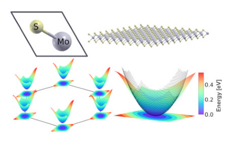
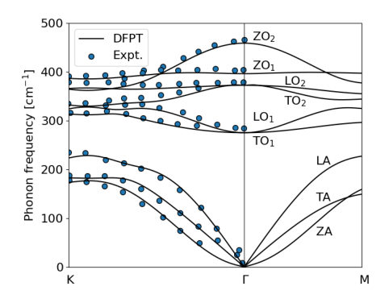
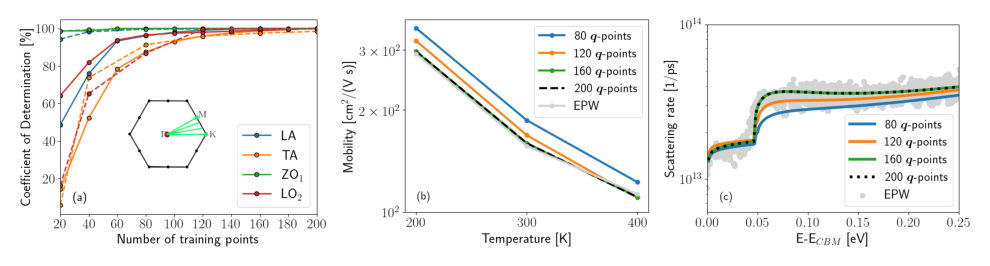
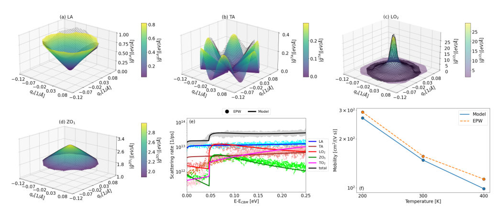
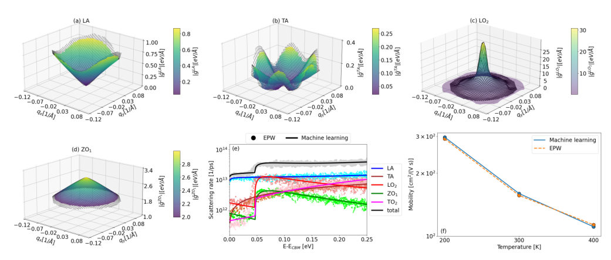
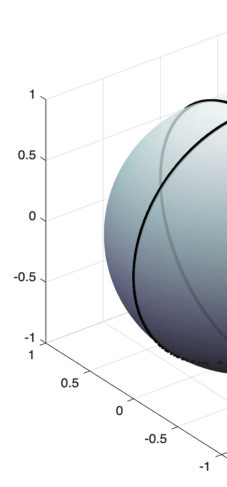
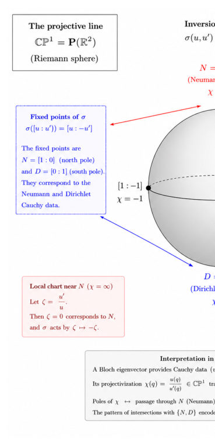
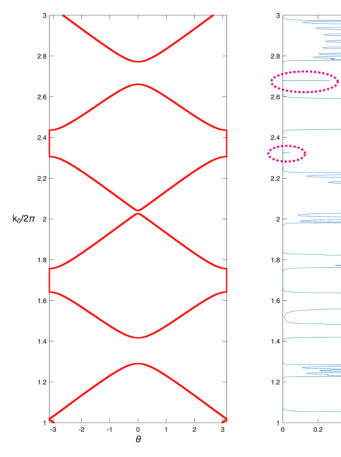
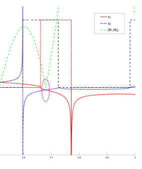

Authors: Ransell D'Souza, Ivana Savic
Type: both · Category: disordered systems and neural networks · PDF: https://arxiv.org/pdf/2606.19130v1
Analysis basis: full PDF text, analyzed in chunks
Topic relevance: methods for driven-dissipative 1/5





Summary. This work tackles the computational bottleneck in calculating electronic transport properties by proposing and comparing two efficient alternatives to standard DFT methods: a generalized model approach and a machine learning interpolation technique. By applying these methods to MoS2, the authors demonstrate that ML offers high accuracy while being significantly faster, providing a powerful tool for predicting thermoelectric performance in novel 2D semiconductors.
Why it may be interesting. The integration of machine learning directly into solid-state physics calculations for complex many-body interactions like electron-phonon coupling represents a powerful paradigm shift in materials discovery, moving beyond purely deterministic, computationally prohibitive first-principles methods.
Main problem. Computing electron-phonon coupling and thermoelectric transport properties from first principles is computationally expensive, necessitating efficient predictive methods.
Main result. The machine learning approach was shown to be more accurate and straightforward to implement than model approaches for predicting these complex material parameters in 2D semiconductors like MoS2.
Method. The study compares three methods: rigorous DFPT+Wannier interpolation, a generalized acoustic deformation potential model, and a novel Machine Learning regression technique (using GPR/PFR) trained on limited first-principles data.
Model / system. The focus is on monolayer MoS2, where electronic transport near the K/K' valleys is governed by electron-phonon coupling ($ ext{el-ph}$), which dictates thermoelectric coefficients. The underlying physics involves modeling phonon modes (acoustic and optical) and their interaction with electrons.
Key observables. Electrical conductivity ($\sigma$), Seebeck coefficient ($S$), Power Factor ($ ext{PF}$), electron mobility, and $ ext{el-ph}$ matrix elements.
Important parameters / regimes. Temperature dependence, carrier concentration regimes (e.g., $10^{12}–10^{13} ext{ cm}^{-2}$), and the specific phonon modes ($ ext{LA}, ext{TA}, ext{LO}_2$, etc.).
Assumptions / limitations. The momentum relaxation time approximation is used for transport calculations, and discrepancies with experiment are often attributed to extrinsic disorder effects.
Figures summary. Figures illustrate energy dispersion, phonon dispersion, comparisons of calculated vs. state-of-the-art $ ext{el-ph}$ matrix elements across different methods (ML vs Model vs DFPT), and temperature/concentration dependence of mobility and thermoelectric properties.
Paper structure. The paper progresses by first establishing the computational bottleneck, then detailing two alternative methodologies (Model approach and ML interpolation) for calculating coupling parameters, validating these against established benchmarks, and finally applying the best method to predict key transport coefficients ($\sigma$, $S$, $ ext{PF}$) across various doping regimes.
The ability to compute electron-phonon coupling from first principles, using density functional perturbation theory and interpolation techniques, has enabled predictive calculations of electronic transport coefficients in crystalline materials. However, these methods are still computationally expensive. Here we present two inexpensive methods to obtain thermoelectric transport properties of semiconductors using a small number of electron-phonon matrix elements calculated from first principles. The first method combines models for coupling of electrons with different phonon modes whose parameters are obtained from $\sim 10$ matrix elements per electronic band and phonon mode calculated from first principles. Within this method, we formulate the acoustic deformation potential model for arbitrary crystal symmetries and band extrema locations. The second method uses machine learning to interpolate $\sim 100$ electron-phonon matrix elements per electronic band and phonon mode on dense reciprocal space grids in the parts of the Brillouin zone relevant for transport. We apply both methods to two-dimensional MoS$_2$ and show very good agreement with the state-of-the-art method. The calculated thermoelectric properties also agree well with experiments. We find that the machine-learning method is more accurate and straightforward to implement compared to the model approach.
Authors: Didier Felbacq, Emmanuel Rousseau
Type: theory · Category: other · PDF: https://arxiv.org/pdf/2606.19141v1
Analysis basis: full PDF text, analyzed in chunks
Topic relevance: Frenkel-Kontorova 1/5




Summary. This work establishes a geometric interpretation for the topological invariant of Bloch bands in inversion-symmetric periodic media. It proves that the physical pole-zero pattern observed at band edges is mathematically equivalent to the first Stiefel–Whitney class of an associated Real line bundle. This unifies several advanced concepts—Berry-Zak phases, local systems, and characteristic classes—into a single coherent framework.
Why it may be interesting. It provides a deep mathematical framework connecting physical band topology (Berry-Zak phase) to fundamental concepts in algebraic topology ($w_1$ class), which is valuable for understanding topological phases in general condensed matter systems.
Main problem. To provide a rigorous geometric interpretation of the topological classification of Bloch bands in one-dimensional periodic media possessing inversion symmetry.
Main result. The pole-zero pattern invariant ($\eta_{PZ}$) associated with these bands is shown to be geometrically equivalent to the first Stiefel–Whitney class ($w_1$) of an associated Real eigenline bundle.
Method. The analysis uses concepts from differential geometry, specifically relating monodromy representations over the Brillouin circle ($S^1$) to characteristic classes via the action of inversion symmetry on Cauchy data in $\mathbb{CP}^1$.
Model / system. The study concerns one-dimensional periodic media characterized by an inversion-symmetric potential $V(x)$, analyzed using Bloch wave theory and the associated Helmholtz/Schrödinger equation.
Key observables. Pole-zero pattern (ZP vs PZ), monodromy sign ($ ho = s_0 s_\pi$), first Stiefel–Whitney class ($w_1 \in H^1(S^1; \mathbb{Z}_2)$).
Important parameters / regimes. Inversion eigenvalues at band edges ($s_0, s_\pi \in \{\pm 1\}$), the quasi-momentum $q$ (parameterized by $S^1$).
Assumptions / limitations. The system is assumed to be one-dimensional, periodic, and possess inversion symmetry; the complex Bloch bundle itself is topologically trivial.
Figures summary. Figures illustrate the trajectory of Cauchy data on $\mathbb{CP}^1$ showing fixed points corresponding to Dirichlet/Neumann conditions, and plot band structures alongside transmission spectra indicating edge modes.
Paper structure. The paper builds from characterizing the pole-zero pattern via impedance functions to establishing a geometric link by analyzing how inversion symmetry dictates the monodromy of the associated Real eigenline bundle over $S^1$.
In a previous work, the topology of inversion-symmetric one-dimensional periodic media was characterized through the pole-zero pattern of an impedance-like function associated with Bloch waves. This construction reproduces the Berry--Zak invariant and provides a criterion for topological interface states. In the present work, we give a geometric interpretation of this formalism. We show that poles and zeros arise naturally from the action of inversion symmetry on the projectivized space of Cauchy data. The corresponding Dirichlet and Neumann states are identified with the two fixed points of the induced $\mathbb Z_2$ action on the Riemann sphere. The key observation is that Bloch eigenvectors are naturally constructed on the universal covering of the Brillouin circle. The topology of the associated Real eigenline bundle is encoded in the action of the deck transformation group on lifted eigenvectors. This action is described by a monodromy sign $ρ\in\{\pm1\}$, determined by the inversion representations carried by the band at the fixed points of the Brillouin zone. We show that this monodromy defines a natural rank-one local system over the Brillouin circle. The corresponding Real line bundle is classified by its first Stiefel--Whitney class, which coincides with the associated $\mathbb Z_2$ pole-zero invariant. This establishes a geometric connection between the pole-zero formalism, Berry--Zak phases, Real bundles and local coefficient systems.